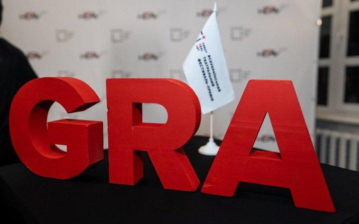

Фестиваль-премія «ГРА – 2026»
В Україні розпочався фінальний етап
VIII Всеукраїнського театрального
фестивалю-премії «ГРА». У програмі
представлено 14 вистав від 13 театрів
із шести міст України. Фінальні покази
триватимуть з 14 до 23 листопада.
Читати більше

Театральна вистава «Кассандра»
Українські театри звертаються до творчості
Лесі Українки та її драматичної поеми
«Кассандра». Твір порушує теми правди,
передбачення та людської долі.
Читати більше

Фестиваль «Схід Опера Фест – 2026»
В Україні відбувся фестиваль оперного
мистецтва, який об'єднав театри та
творчі колективи з різних міст.
Читати більше

Театральне життя Львова
Львівські театри продовжують знайомити
глядачів із новими постановками,
творчими проєктами та сучасними
театральними експериментами.
Читати більше